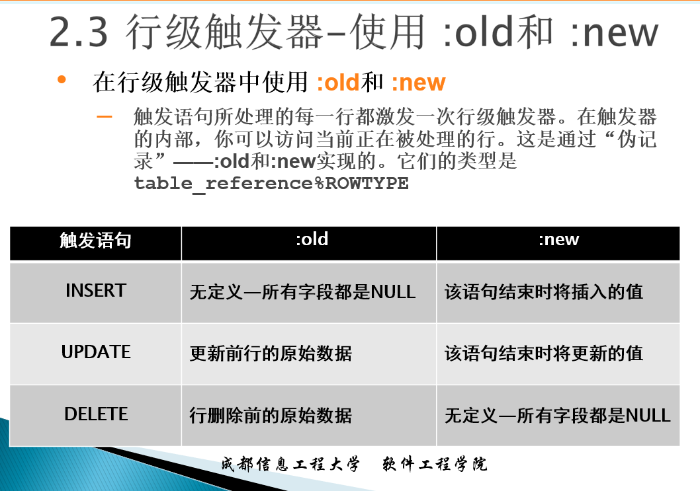
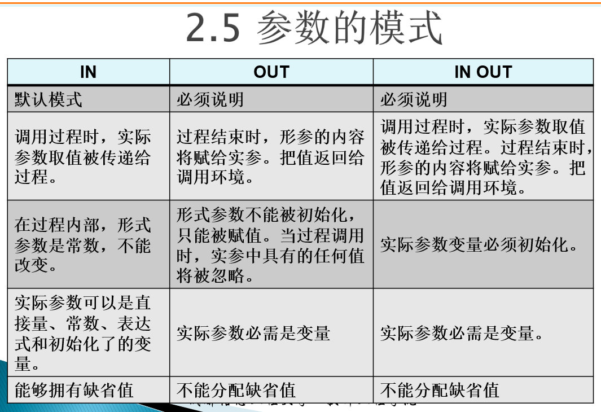

Oracle复习7
匿名块
1 | |
- 匿名块（以DECLARE或BEGIN开始）每次使用时都要进行编译。
- 匿名块不存储在数据库中，并且它不能从其它的PL/SQL块中进行调用。
触发器
- 触发器类似于过程和函数，都拥有声明、执行和异常处理过程的带名PL/SQL块。与包类似，触发器必须存储在数据库中。
- 前面已经讲过，过程是显式地通过过程调用执行的，同时过程调用可以传递参数。与之相反，触发器是在事件发生时隐式地运行的，并且触发器不能接受参数。
- 触发事件可以是对数据库表的DML（INSERT、UPDATE、DELETE）操作或某种视图的操作。Oracle8i把触发器功能扩展到了可以激发系统事件，如数据库的启动和关闭，以及某种DDL操作。
- 触发器主要分为：DML触发器、替代触发器和系统触发器。本次课程主要讲述DML触发器。
- 触发器可用来补充声明的参照完整性，强制实施复杂的业务规则
- 触发器是一个独立的事务，被当作一个整体执行，在执行过程中如果发生错误，则整个事务会自动回滚。
DML触发器创建语法
1 | |
触发器的激发顺序
- 执行BEFORE语句级触发器（如果有的话）
- 对于受语句影响的每一行
- 执行BEFORE行级触发器（如果有的话）
- 执行DML语句（系统自动执行）
- 执行AFTER行级触发器（如果有的话）
- 执行AFTER语句级触发器（如果有的话）
1 | |
1 | |
语句级触发器例子
1 | |
1 | |
行级触发器例子
1 | |
行级触发器——:old和:new

1 | |
行级触发器——限制条件
1 | |
行级触发器应用
1 | |
管理触发器
禁用或启用一个触发器
1
ALTER TRIGGER trigger_name DISABLE | ENABLE禁用或启用一张表的多有触发器
1
ALTER TABLE table_name DISABLE | ENABLE ALL TRIGGERS重新编译一个触发器
1
ALTER TRIGGER trigger_name COMPILE删除触发器
1
DROP TRIGGER trigger_name
子程序
- 子程序是带名的PL/SQL块，能够接受参数和被环境调用。在PL/SQL中两类子程序：过程和函数
1 | |
- 子程序说明（header）决定:
- PL/SQL子程序的类型是过程还是函数。
- 子程序的名称
- 参数列表
- 当子程序是函数时必须要有返回值(使用RETURN子句)
- 关键字IS或AS是必须的。
- 子程序体:是一个拥有声明、执行和异常处理部分的PL/SQL块。
- 声明部分介于IS|AS和BEGIN之间。在匿名块中必须使用DECLARE关键字显示的指出声明部分，而在子程序中没有DECLARE关键字。
- 执行部分介于BEGIN和END关键字之间，这部分必须存在
- 异常处理部分介于EXCEPTION和END之间是可选的部分
过程
创建过程
1 | |
例子
1 | |
1 | |
1 | |
参数的模式
- 过程可以通过参数和调用环境进行数据传递
- 有三种传递模式—IN、OUT和IN OUT。如果没有为形式参数指定模式，则使用缺省模式IN。

IN参数
1 | |
OUT参数
1 | |
IN OUT参数
1 | |
参数的缺省值
1 | |
1 | |
删除过程
1 | |
函数
创建函数
1 | |
调用函数
1 | |
执行函数
1 | |
删除函数
1 | |
1 | |
1 | |
Oracle复习7
http://example.com/2021/11/11/Oracle复习7/